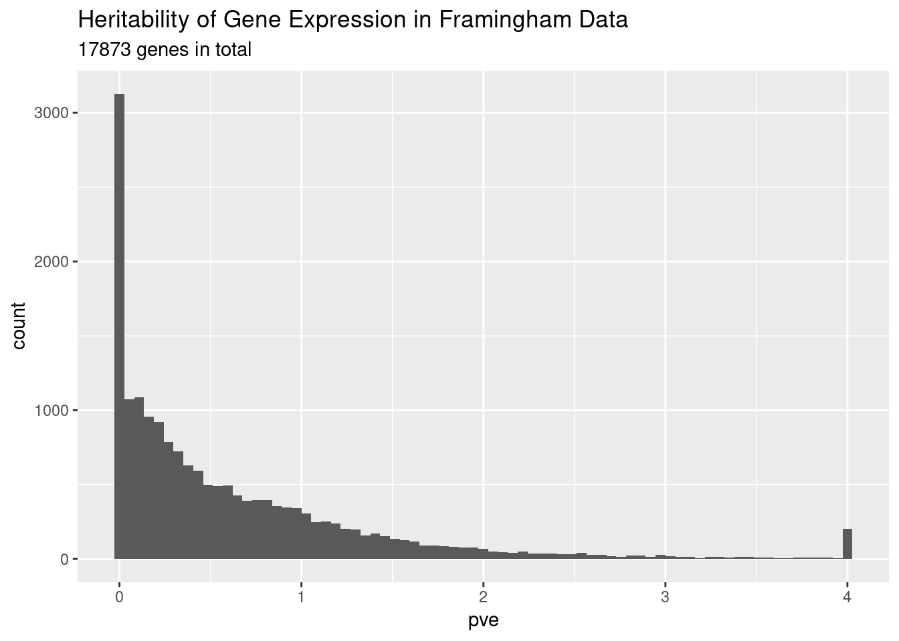
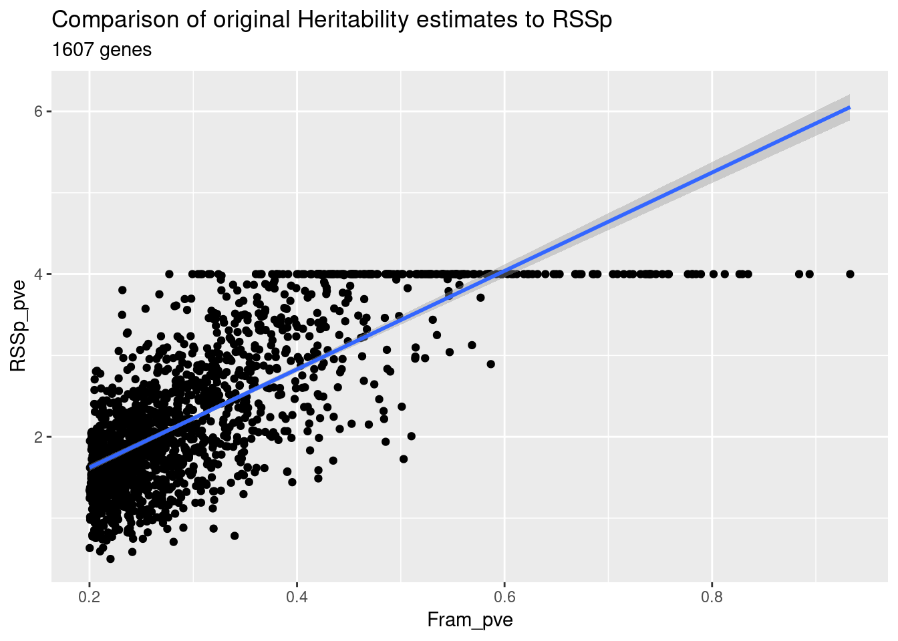

Last updated: 2018-09-25
workflowr checks: (Click a bullet for more information) ✔ R Markdown file: up-to-date
Great! Since the R Markdown file has been committed to the Git repository, you know the exact version of the code that produced these results.
✔ Environment: empty
Great job! The global environment was empty. Objects defined in the global environment can affect the analysis in your R Markdown file in unknown ways. For reproduciblity it’s best to always run the code in an empty environment.
✔ Seed:
set.seed(12345)
The command set.seed(12345) was run prior to running the code in the R Markdown file. Setting a seed ensures that any results that rely on randomness, e.g. subsampling or permutations, are reproducible.
✔ Session information: recorded
Great job! Recording the operating system, R version, and package versions is critical for reproducibility.
✔ Repository version: 0049ece
wflow_publish or wflow_git_commit). workflowr only checks the R Markdown file, but you know if there are other scripts or data files that it depends on. Below is the status of the Git repository when the results were generated:
Ignored files:
Ignored: .RData
Ignored: .Rhistory
Ignored: .Rproj.user/
Ignored: .httr-oauth
Ignored: analysis/PolygenicEstimation_cache/
Ignored: code/.Rhistory
Ignored: code/scripts/.Rhistory
Ignored: code/snakemake_files/.Rhistory
Ignored: code/snakemake_files/.snakemake/
Ignored: code/snakemake_files/parameter_generation/
Ignored: code/snakemake_files/subset_data_pipeline/.RData
Ignored: data/rep_polygenic/
Untracked files:
Untracked: _workflowr.yml
Untracked: analysis/#RSSp_WTCC_noConfounding.Rmd#
Untracked: analysis/AFvsp.Rmd
Untracked: analysis/ChunkingEffect.Rmd
Untracked: analysis/ChunkingLD.Rmd
Untracked: analysis/DownSamplingResults.Rmd
Untracked: analysis/EVD_SVD.Rmd
Untracked: analysis/GRM_estimation.Rmd
Untracked: analysis/GenomeWideSimulation.Rmd
Untracked: analysis/Heritability.Rmd
Untracked: analysis/LDshrink_effect.Rmd
Untracked: analysis/MeetingSummary1.Rmd
Untracked: analysis/RSSR_PolygenicData.Rmd
Untracked: analysis/RSSp.stan
Untracked: analysis/RSSp2.stan
Untracked: analysis/RSSp_LDshrink.Rmd
Untracked: analysis/RSSp_Large_WTCC_noConfounding.Rmd
Untracked: analysis/RSSp_Largest_Simulation.Rmd
Untracked: analysis/RSSp_WTCC_noConfounding.Rmd
Untracked: analysis/RSSp_ldsc_highPVE_chr1.Rmd
Untracked: analysis/RSSp_ldsc_highPVE_hr.Rmd
Untracked: analysis/RSSp_ldsc_noConfounding.Rmd
Untracked: analysis/Running_ldetect.Rmd
Untracked: analysis/SPVE.Rmd
Untracked: analysis/SharedSNPAnalysis (dell-desktop's conflicted copy 2018-09-04).Rmd
Untracked: analysis/SharedSNPAnalysis.Rmd
Untracked: analysis/Summary.Rmd
Untracked: analysis/Summary.org
Untracked: analysis/Vanilla_LDSC.Rmd
Untracked: analysis/chr_16.Rmd
Untracked: analysis/derby.log
Untracked: analysis/eQTL_Pipelines.Rmd
Untracked: analysis/fquh_mod.RDS
Untracked: analysis/importFramExp.Rmd
Untracked: analysis/ltximg/
Untracked: analysis/nquh_mod.RDS
Untracked: analysis/out_res.RDS
Untracked: analysis/pvv_opt.Rmd
Untracked: analysis/quh_mod.RDS
Untracked: analysis/scz_data.org
Untracked: analysis/shrinkage_effect.Rmd
Untracked: code/.ipynb_checkpoints/
Untracked: code/RSSp_abstract.org
Untracked: code/RSSp_abstract_notes.org
Untracked: code/RSSp_talk_notes.org
Untracked: code/RSSp_talk_notes.pdf
Untracked: code/RSSp_talk_notes.tex
Untracked: code/Untitled.ipynb
Untracked: code/Untitled1.ipynb
Untracked: code/ideas.org
Untracked: code/ltximg/
Untracked: code/rssp.yml
Untracked: code/scripts/#compare_eqtl.R#
Untracked: code/scripts/RSSp_ldsc_results.Rmd
Untracked: code/scripts/bin/
Untracked: code/scripts/ldsc_rssp.Rmd
Untracked: code/scripts/matlab2h5.py
Untracked: code/scripts/vcf-liftover.sh
Untracked: code/scripts/vcf2allel.py
Untracked: code/snakemake_files/#LD_snakefile#
Untracked: code/snakemake_files/environment_rssp.yml
Untracked: code/snakemake_files/eqtl_check.RDS
Untracked: code/snakemake_files/kg_snakefile~
Untracked: code/snakemake_files/ldsc/
Untracked: code/snakemake_files/plink.log
Untracked: code/snakemake_files/rssp_ldsc_report/
Untracked: code/snakemake_files/temp_map_19.RDS
Untracked: code/snakemake_files/temp_target_19.RDS
Untracked: code/snakemake_files/vert.txt
Untracked: code/snakemake_files/vgcore.30188
Untracked: code/workflow_params.json~
Untracked: data/NCBI34_to_GRCh38.chain.gz
Untracked: data/SNP_ws.RData
Untracked: data/Snakemake_inputs/
Untracked: data/all_df.RDS
Untracked: data/temp_ws.RData
Untracked: docs/#RSSp_WTCC_noConfounding.Rmd#
Untracked: docs/RSSp.stan
Untracked: docs/RSSp2.stan
Untracked: docs/Summary.org
Untracked: docs/derby.log
Untracked: docs/figure/LDshrink_effect.Rmd/
Untracked: docs/figure/RSSp_Large_WTCC_noConfounding.Rmd/
Untracked: docs/figure/RSSp_WTCC_noConfounding.Rmd/
Untracked: docs/figure/RSSp_ldsc_highPVE_chr1.Rmd/
Untracked: docs/figure/RSSp_ldsc_highPVE_hr.Rmd/
Untracked: docs/figure/SharedSNPAnalysis.Rmd/
Untracked: docs/fquh_mod.RDS
Untracked: docs/log4j.spark.log
Untracked: docs/ltximg/
Untracked: docs/nquh_mod.RDS
Untracked: docs/quh_mod.RDS
Untracked: docs/scz_data.org
Untracked: dosage.scan.RData
Untracked: dosage.snp.RData
Untracked: output/RSSp_snakemake/
Unstaged changes:
Modified: .gitignore
Modified: PolygenicRSS.Rproj
Modified: analysis/DownsamplingResults2.Rmd
Modified: analysis/IndependenceCheck.Rmd
Modified: analysis/Meeting_Notes.Rmd
Modified: analysis/New_WholeGenome.Rmd
Modified: analysis/OutOfSampleLD.Rmd
Modified: analysis/PolygenicEstimation.Rmd
Modified: analysis/RSSP_standard_error.Rmd
Modified: analysis/RSSp_Chunksize_Investigation.Rmd
Modified: analysis/RSSp_Large_Simulation.Rmd
Modified: analysis/RSSp_Posterior.Rmd
Modified: analysis/RSSp_Prediction.Rmd
Modified: analysis/RSSp_ldsc.Rmd
Modified: analysis/RSSp_ldsc_gwas_direct_noConfounding.Rmd
Modified: analysis/RSSp_ldsc_highPVE.Rmd
Modified: analysis/SimulationPipeline.Rmd
Modified: analysis/_site.yml
Modified: analysis/about.Rmd
Modified: analysis/chr_2.Rmd
Deleted: analysis/chunks.R
Modified: analysis/index.Rmd
Modified: analysis/license.Rmd
Modified: analysis/lnzDist.Rmd
Modified: analysis/results.Rmd
Modified: analysis/simulatingGWAS.Rmd
Modified: analysis/simulation.Rmd
Modified: code/TF_LDshrink.ipynb
Modified: code/dask_LDshrink.ipynb
Modified: code/snakemake_files/param_snakefile
| File | Version | Author | Date | Message |
|---|---|---|---|---|
| html | 4252e2b | CreRecombinase | 2018-09-25 | Build site. |
| Rmd | 99c749f | CreRecombinase | 2018-09-25 | analysis/results.Rmd |
| html | 4ec052c | CreRecombinase | 2018-09-25 | Build site. |
| Rmd | ab17ced | CreRecombinase | 2018-09-25 | analysis/results.Rmd |
| html | 79a2e50 | CreRecombinase | 2018-09-25 | Build site. |
| Rmd | cba28b7 | CreRecombinase | 2018-09-25 | wflow_publish(“analysis/Exp_Heritability.Rmd”) |
The Framingham eQTL data consists of the marginal association between gene expression and genotype for 5253 individuals across 17873 genes. Expression was corrected for PEER factors in a method described in the paper. After an 0.01 allele frequency cutoff, there were 7357647 variants (of a possible 36648992 mono-allelic SNV) for a total of 1.315032210^{11} associations.
For a first pass, I used in-sample LD, with the interpolated_omni genetic map. I used LDshrink to compute correlation, and LD was calculated within LD blocks defined by LDetect.
RSSp was run for each of the genes with default settings. Because RSSp uses a bounded optimizer, where PVE is bound between 0 and 4. 4 was choosen so that I could distinguish between the optimizer getting stuck at the boundary and a “true” PVE of 1. As you’ll see in the histogram below, there is a noticeable peak at 4, and this is the reason for that.
── Attaching packages ──────────────────────────────────────────────────────────────────────────────────────── tidyverse 1.2.1 ──✔ ggplot2 3.0.0 ✔ purrr 0.2.5
✔ tibble 1.4.2 ✔ dplyr 0.7.6
✔ tidyr 0.8.1 ✔ stringr 1.3.1
✔ readr 1.1.1 ✔ forcats 0.3.0── Conflicts ─────────────────────────────────────────────────────────────────────────────────────────── tidyverse_conflicts() ──
✖ dplyr::filter() masks stats::filter()
✖ dplyr::lag() masks stats::lag()
| Version | Author | Date |
|---|---|---|
| 4252e2b | CreRecombinase | 2018-09-25 |
Some summary statistics for the estimates
Loading required namespace: shinyJoining, by = "transcript_cluster_id"I compared heritability estimates of RSSp to the 1607 heritability estimates published in A Systematic Heritability Analysis of the Human Whole Blood Transcriptome

| Version | Author | Date |
|---|---|---|
| 4252e2b | CreRecombinase | 2018-09-25 |
# A tibble: 2 x 5
term estimate std.error statistic p.value
<chr> <dbl> <dbl> <dbl> <dbl>
1 (Intercept) 0.412 0.0435 9.47 9.49e- 21
2 Fram_pve 6.05 0.131 46.3 8.50e-298There is a correlation coefficient of 0.756083 between the two results.
R version 3.5.1 (2018-07-02)
Platform: x86_64-pc-linux-gnu (64-bit)
Running under: Manjaro Linux
Matrix products: default
BLAS/LAPACK: /opt/intel/compilers_and_libraries_2018.1.163/linux/mkl/lib/intel64_lin/libmkl_gf_lp64.so
locale:
[1] LC_CTYPE=en_US.UTF-8 LC_NUMERIC=C
[3] LC_TIME=en_US.UTF-8 LC_COLLATE=en_US.UTF-8
[5] LC_MONETARY=en_US.UTF-8 LC_MESSAGES=en_US.UTF-8
[7] LC_PAPER=en_US.UTF-8 LC_NAME=C
[9] LC_ADDRESS=C LC_TELEPHONE=C
[11] LC_MEASUREMENT=en_US.UTF-8 LC_IDENTIFICATION=C
attached base packages:
[1] stats graphics grDevices utils datasets methods base
other attached packages:
[1] forcats_0.3.0 stringr_1.3.1 dplyr_0.7.6 purrr_0.2.5
[5] readr_1.1.1 tidyr_0.8.1 tibble_1.4.2 ggplot2_3.0.0
[9] tidyverse_1.2.1
loaded via a namespace (and not attached):
[1] tidyselect_0.2.4 haven_1.1.2 lattice_0.20-35
[4] colorspace_1.3-2 htmltools_0.3.6 yaml_2.2.0
[7] utf8_1.1.4 rlang_0.2.2.9000 later_0.7.3.9000
[10] R.oo_1.22.0 pillar_1.3.0 glue_1.3.0
[13] withr_2.1.2 R.utils_2.6.0 modelr_0.1.2
[16] readxl_1.1.0 bindrcpp_0.2.2 bindr_0.1.1
[19] plyr_1.8.4 munsell_0.5.0 gtable_0.2.0
[22] workflowr_1.1.1 cellranger_1.1.0 rvest_0.3.2
[25] R.methodsS3_1.7.1 htmlwidgets_1.2.1 evaluate_0.11
[28] labeling_0.3 knitr_1.20 crosstalk_1.0.0
[31] httpuv_1.4.3 fansi_0.3.0 broom_0.5.0
[34] Rcpp_0.12.18 xtable_1.8-2 promises_1.0.1
[37] DT_0.4.17 scales_1.0.0 backports_1.1.2
[40] jsonlite_1.5 mime_0.5 hms_0.4.2
[43] digest_0.6.17 stringi_1.2.4 shiny_1.1.0
[46] grid_3.5.1 rprojroot_1.3-2 cli_1.0.0
[49] tools_3.5.1 magrittr_1.5 lazyeval_0.2.1
[52] crayon_1.3.4 whisker_0.3-2 pkgconfig_2.0.2
[55] xml2_1.2.0 lubridate_1.7.4 assertthat_0.2.0
[58] rmarkdown_1.10 httr_1.3.1 rstudioapi_0.7
[61] R6_2.2.2 nlme_3.1-137 git2r_0.23.0
[64] compiler_3.5.1
This reproducible R Markdown analysis was created with workflowr 1.1.1